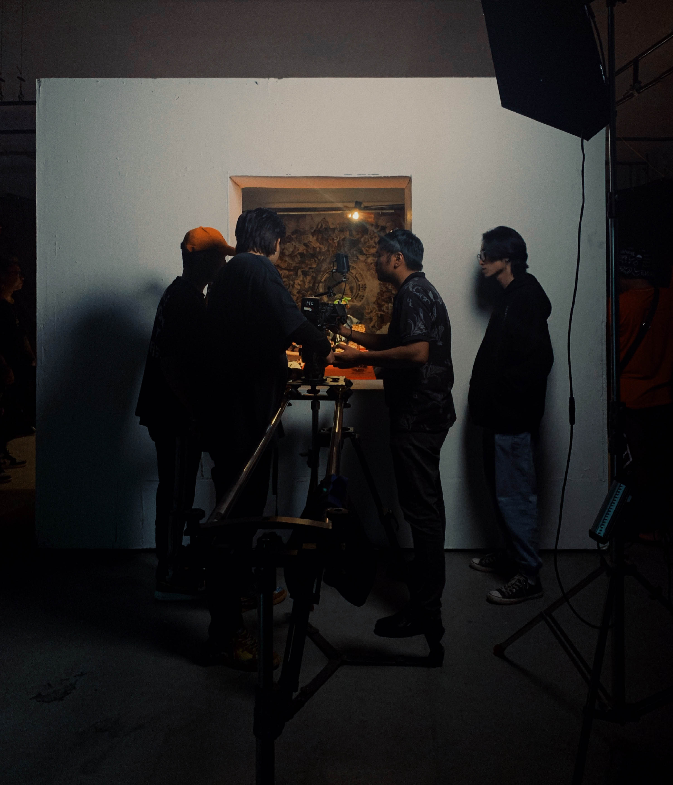

ABOUT THE WEBSITE

This website is where you may find some random interesting photos or beautiful places along my journey. It could be a café shop, a bookstore, or somewhere else on earth I've come across. Take time & stay cool!
- pea.in.pyjama
ABOUT ME
Graphic Designer
Since 2018
I'm currently studying Graphic Design at FPT University so basically I make art for fun!

Director
Since 2017
However filmmaking is what I actually fall in love with. That's the reason why I'm working as Screenwriter & Director while studying, a bunch of work but it's really enjoyable and has a huge impact on my vision of art!
Photographer
Since 2016
Before studying at FPT University I was in love with photography & working as an amateur photographer...